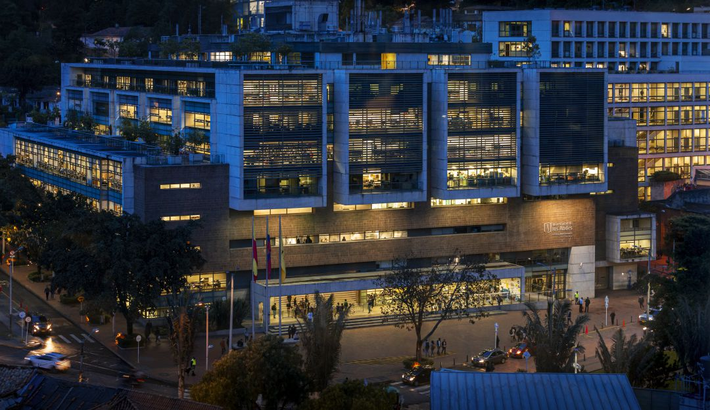
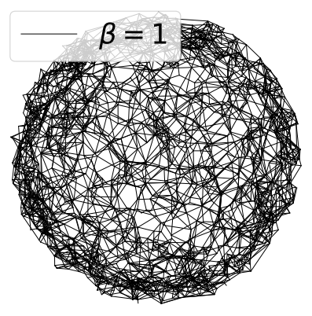
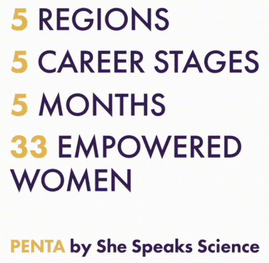

About me
I'm Valentina, a Colombian PhD candidate at the Australian National University.
I'm currently based on Canberra-Australia. I do research on emission-line galaxies during the epoch of reionization.
I am curious about other cultures and love learning new things.
I speak Spanish as my native language, English and French.
You can see my complete CV
here.
Education

Degrees
Undergraduate student at Universidad de los Andes in Bogotá-Colombia. Majoring in:
- PhD in Astronomy and Astrophysics (2023-now)
- Bachelor in Physics (2018-2023)
- Bachelor in Systems and Computing Engineering (2019-2023)
- Minor in Astronomy
Research
Interested in the areas of:
- Astronomy
- Cosmology
- Star Formation and Evolution
- Galaxy Formation and Evolution
- Galaxies in the Epoch of Reionization
- Engineering
- Data Analytics
- Data Science
- Software Development
- Database management
Programming languages
- Python

- Java

- C/C++

- SQL

- LaTeX
Projects
Cosmology
The cosmic web through the lens of graph entropy

An analysis of the cosmic web using properties of graphs. Applied the beta-skeleton graph on simulated dark matter halos and measured its graph entropy. We found the correlation between the entropy and quantities such as the cosmological parameters.
See moreStar Formation
Structural analysis of massive protoclusters

An study of the structure of evolving massive protoclusters using properties of graphs to determine properties of the parent molecular cloud. Applied dendrogram to identify protostellar cores at different stages of evolution and compute its Minimum Spanning Tree. We computed quantities such as the mass segregation of the cluster and analyzed the spatial distribution of the cores.
See moreMentorship
PENTA

Participant of the mentorship program supported by the University of Cambridge and the IAU. After a competitive selection, I was one of the 33 women selected from all around the world to mentor a girl and be mentored by another woman in STEM. This program aims to create a community of empowered women by giving advice and supporting each other.
See moreInterests
Tenis
Puzzles
Contact
If you have any questions or want to chat about my projects, feel free to contact me here: maria.garciaalvarado@anu.edu.au!